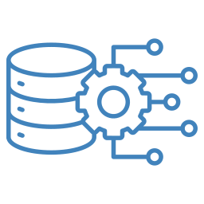

Olá! Seja bem vindo ao meu portifólio de Desenvolvimento de Framework
Apaixonado por dados, decidi trilhar minha carreira em analise e tratamento de dados. Meu objetivo é me tornar um Engenheiro de Dados!
Com conhecimentos em Amazon Redshift, Apache Spark, Apache Airflow, PostgreSQL, Power BI, Git e Azure Data Factory, procuro sempre me desenvolver a cada dia!
